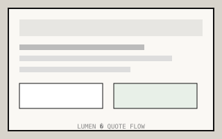

Tariro
Moyo
Product design — healthcare, logistics, civic systems

01
Parirenyatwa Outpatients
Patient intake · 2024
Clinic staff duplicated patient data across paper registers and two legacy systems. I mapped the intake path with nurses in Harare and Bulawayo, then redesigned a single flow the engineering team could ship in one quarter.
02
ZimPost Logistics
Shipment dashboard · 2023
Exception-first dashboard for depot leads — what is late, damaged, or mis-routed — rather than another summary chart nobody opens.


03
Sunridge Solar
Quote request · 2022
Residential quote flow rebuilt after listening to installer call recordings from Borrowdale and Marlborough. Fewer fields, clearer next step, no marketing overlay on a form people complete on a hot roof.
I observe work before drawing screens. Former technical writer. Based in Avondale, Harare. Full-time at Parirenyatwa Group; selective contract work by introduction only.